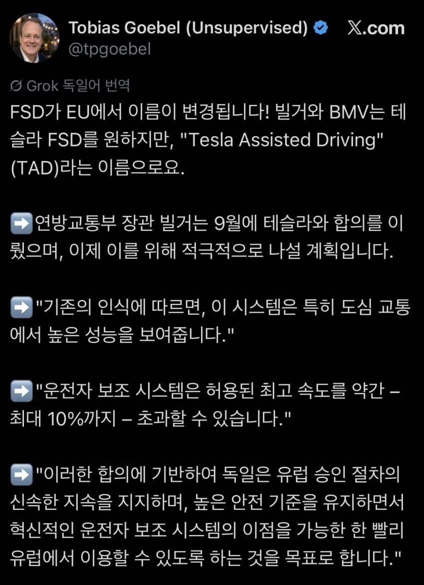

https://x.com/tpgoebel/status/2107469871768346922?s=46&t=WHwclR8mKvlCsbnAhAG_lA
FSD 대신 테슬라 어시스티드 드라이빙(이건 지금 적용됨)
제한속도 10% 까지만 초과하는걸로 합의하는 조건으로 독일 승인 지원

https://x.com/tpgoebel/status/2107469871768346922?s=46&t=WHwclR8mKvlCsbnAhAG_lA
FSD 대신 테슬라 어시스티드 드라이빙(이건 지금 적용됨)
제한속도 10% 까지만 초과하는걸로 합의하는 조건으로 독일 승인 지원
ㄹㅇ 이게 충격이네 ㅋㅋㅋ
독일도 독3사들 있어서 막을꺼라 생각했는데
독인은 국토부가 없나요?
타드?
쟤들은 준비가 됐거든 ㅋ
중국에선 모멘타로
글로벌은 엔비디아로
이제 시작한 현대는….ㅋ
현대도 엔비디아 쓰는거 아니었음?
현대는 독자개발중임. 엔비디아꺼 쓰다가 넘어갈예정
이제 자국 자동차 브랜드 있는 나라 아무도 허용 안해줬다는 말은 못하겠네
사실 기존 자국 브랜드있던 체코도 FSD 승인해줬음ㅋㅋㅋ
독일차는 볼보든 엔비디아칩 성능 개쩔더만
독일 자율주행 맛집임?
현토부 철판 얼마나 두꺼운지 보자고 ㅋㅋ
한국에선 위험하다고 안 해줄듯ㅋㅋㅋ
어허~ 혼다이 개붕이도 많다고~
굉장한 두께였디
???: 겠냐고 ㅋㅋ (기어봉을 넣으며)
이름도 바꾸나보네
따로 이름까지 붙일정도면 기존 네델란드의 예외승인과 별개로 독일정부와 협의해서 승인받았나보네
테슬라 뜩상하나!
이래야 현토부지
ㅋㅋㅋㅋ 나도 현기차 참 좋아하고, 어느정도 보호할수밖에 없다는것도 알지만... 현기차 살리자고 온국민이 핸들잡고 교통체증 뚫는 노예짓을 몇년을 더 해야한다는게 좀 그렇다.
우리나라는 또 뭐라고 변명하려나
흥미진진 하네
와 독일이 될줄은